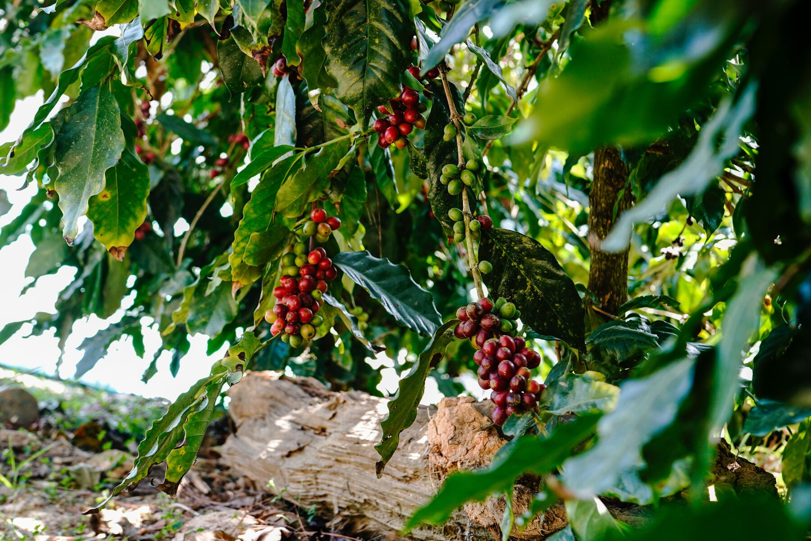
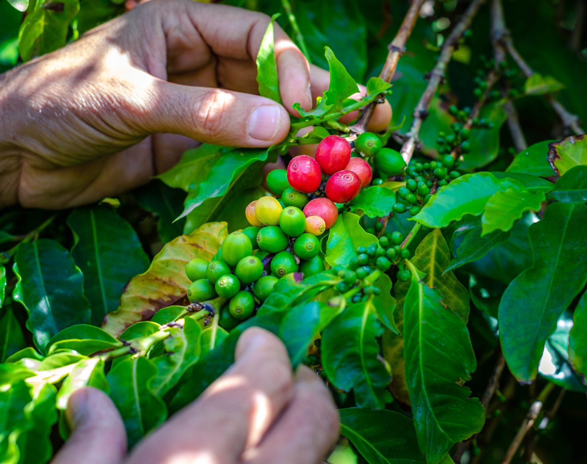

대표 영상 · 원작자·출처·이용허락 확인 필요
Shopping
공식 온라인 숍에서 현재 판매 상품과 재고를 확인하고 주문·결제·배송조회를 진행하세요.
대표 영상입니다 — 실제 사진 촬영이 필요합니다.
주문부터 확인까지
01 주문
공식 숍에서 상품·옵션·수량을 선택하고 주문서를 작성합니다.
02 결제
공식 숍이 제공하는 결제수단으로 진행합니다. 완료 화면에서 주문번호를 보관하세요.
03 제품 발송
판매자가 입금 확인 후 상품을 준비하고 택배사·운송장을 등록합니다.
04 확인
공식 주문조회에서 진행 상태와 배송 정보를 확인합니다. 확인되지 않으면 매장에 문의하세요.
주문·배송 확인
주문번호를 준비한 뒤 공식 숍의 주문조회로 이동하세요. 회원·비회원 확인 절차는 공식 숍의 안내를 따릅니다.
공식 주문·배송 조회조회 화면에 접속 제한이나 로그인 안내가 보이면 공식 숍 첫 화면의 ORDER TRACKING 메뉴를 이용하거나 이메일로 문의해 주세요.
공식 숍 첫 화면결제와 주문·배송 정보는 공식 숍에서 처리합니다. 발송은 판매자의 상품 준비와 운송장 등록 후 진행됩니다. 이 화면에서 결제정보를 수집하거나 주문을 생성하지 않습니다.
배송·교환·환불 안내
대표 자료 · 원작자·원출처·이용허락 확인 후 게시
대체 이미지입니다 — 실제 제품 사진이 필요합니다.
로스팅 · 공식 숍 확인로스팅 원두
예멘 싱글 오리진 원두를 에스프레소와 핸드브루용으로 로스팅했습니다.
Shopping 구매 안내 →
대표 자료 · 원작자·원출처·이용허락 확인 후 게시
대체 이미지입니다 — 실제 제품 사진이 필요합니다.
그린빈 · 판매 여부 문의그린빈(생두)
전문 로스터와 홈로스터를 위한 예멘 생두입니다.
Shopping 구매 안내 →
대표 자료 · 원작자·원출처·이용허락 확인 후 게시
대체 이미지입니다 — 실제 제품 사진이 필요합니다.
판매 여부 문의티 · 브루잉 도구 · 오브제
기샤르와 향신료, 브루잉 도구, 디 진테제 오브제.
직접 방문해서 구매하고 싶으신가요?
자료 확인: 2026-10-17 · 공식 브랜드 소개 · 공식 이용안내. 최신 운영·가격·재고는 공식 채널에서 확인하세요.